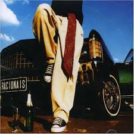
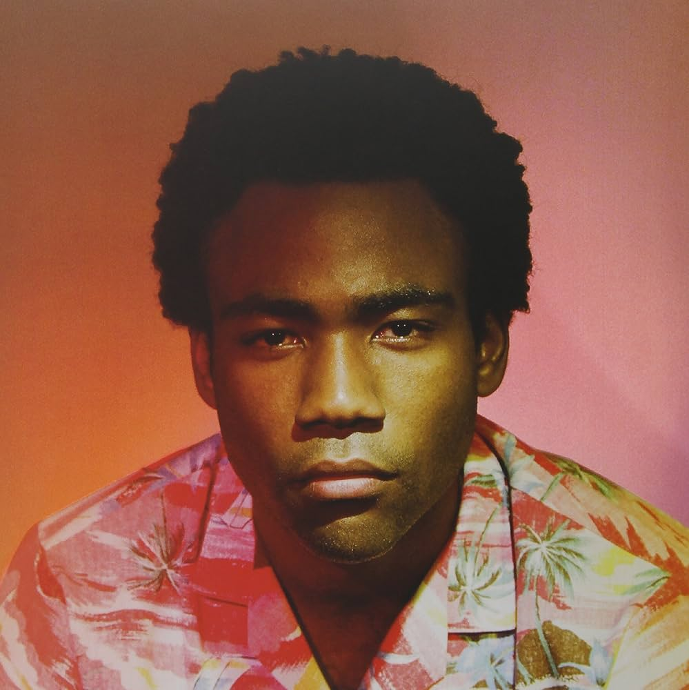
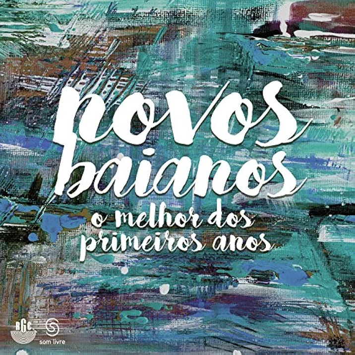
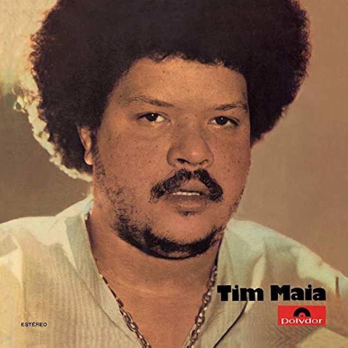

Avalie e conheça novos albuns de musica que sejam seu estilo

Nada como um dia após o outro dia
Racionais
Album 2002

Beacause the internet
Childsh Gambino
Album 2013

O melhor dos primeiros anos
Novos Baianos
Album 2016

Tim maia 1971
Tim Maia
Album 1971
Bençãos que não tem fim
Isadora Pompeo
Album 2023